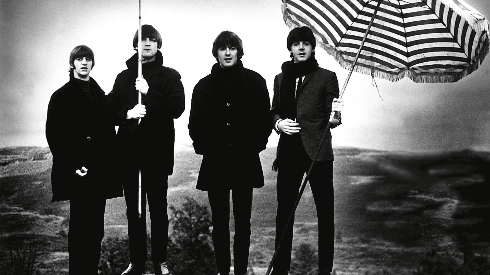

Ludwig van Beethoven
compositor, director de orquesta y virtuoso pianista alemán. Su legado musical abarca, cronológicamente, desde el Clasicismo hasta los inicios del Romanticismo.
Don Shirley
pianista y compositor de jazz y de música clásica estadounidense. Grabó muchos álbumes para la discográfica Cadence Records durante las décadas de 1950 y 1960, en los que experimentaba con el jazz e influencias de la música clásica.
Elvis Presley
Se hace referencia a él frecuentemente como «El Rey del Rock and Roll» o simplemente «El Rey».

The Beatles
Banda de rock inglesa activa durante la década de 1960, y reconocida como la más exitosa comercialmente y la más alabada por la crítica en la historia de la música popular y de la música rock.

Queen
Banda británica de rock formada en 1970 en Londres por el cantante Freddie Mercury, el guitarrista Brian May, el baterista Roger Taylor y el bajista John Deacon.

Guns N' Roses
Banda estadounidense de hard rock formada en Hollywood en la zona de Sunset Strip alrededor de Santa Monica, en la ciudad de Los Ángeles, California en 1985.

Bon Jovi
Banda de rock formada en 1983 en Nueva Jersey, Estados Unidos, por su líder y vocalista Jon Bon Jovi.
Backstreet Boys
Boy band estadounidense de música pop formada en Orlando, Florida, el 20 de abril de 1993.

One Direction
boy band británico-irlandesa formada en 2010 en Londres, con motivo del programa The X Factor. Durante la transmisión del concurso, el quinteto, compuesto en aquel entonces por Harry Styles, Liam Payne, Zayn Malik, Niall Horan y Louis Tomlinson, fue apadrinado por Simon Cowell.
Se ha demostrado la íntima relación entre la especie humana y la música, y mientras que algunas interpretaciones tradicionales vinculaban su surgimiento a actividades intelectuales vinculadas al concepto de lo sobrenatural (haciéndola cumplir una función de finalidad supersticiosa, mágica o mística), actualmente se la relaciona con los rituales de apareamiento y con el trabajo colectivo.2
Para el hombre primitivo había dos señales que evidenciaban la separación entre vida y muerte: el movimiento y el sonido. Los ritos de vida y muerte se desarrollan en esta doble clave. En el llamado arte prehistórico danza y canto se funden como símbolos de la vida mientras que quietud y silencio se conforman como símbolos de la muerte.
El hombre primitivo encontraba música en la naturaleza y en su propia voz. También aprendió a crear sonido con objetos rudimentarios como fueron: huesos, cañas, troncos, conchas, etc